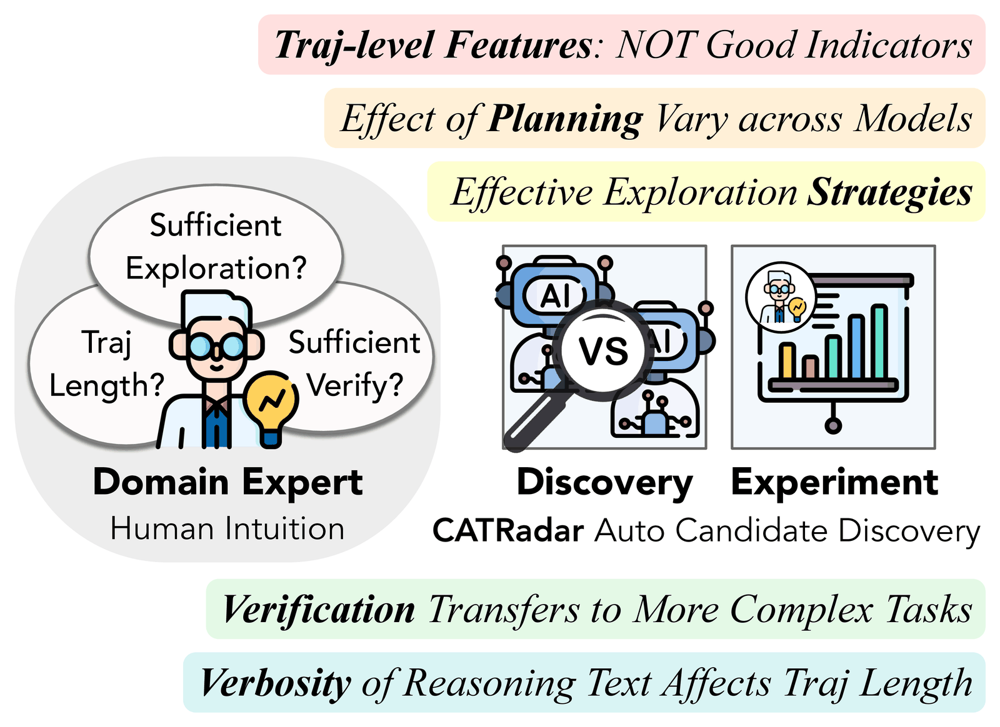
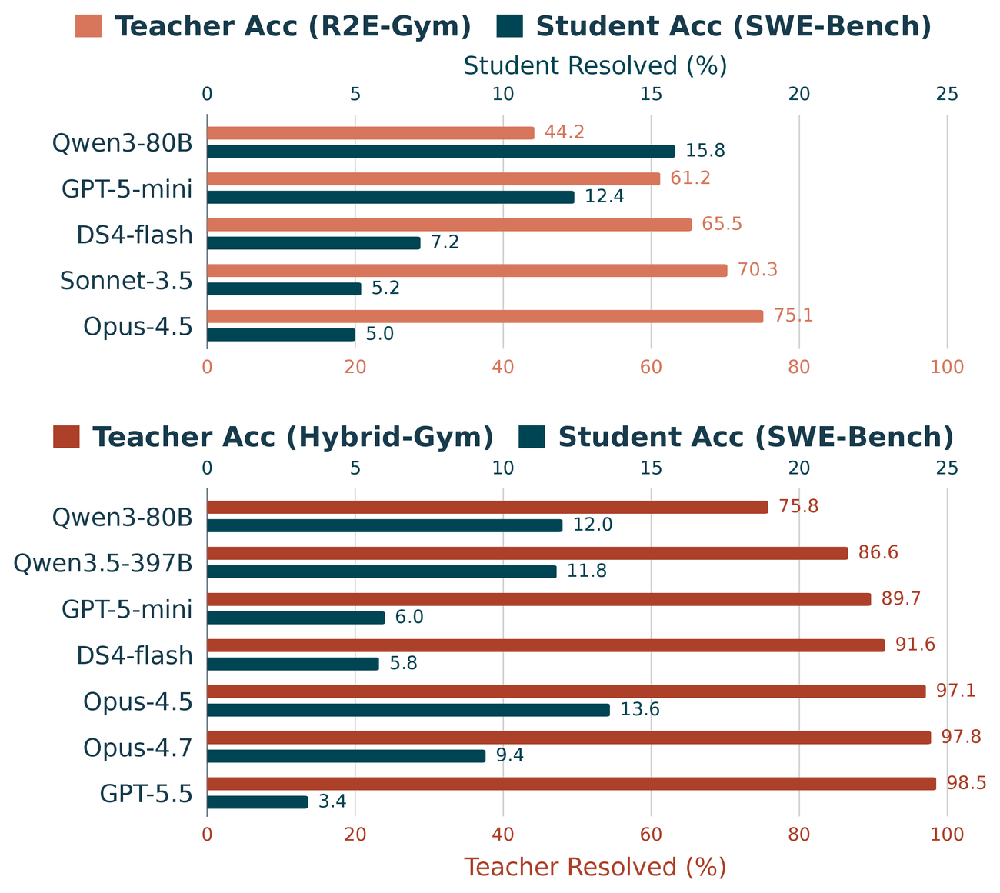
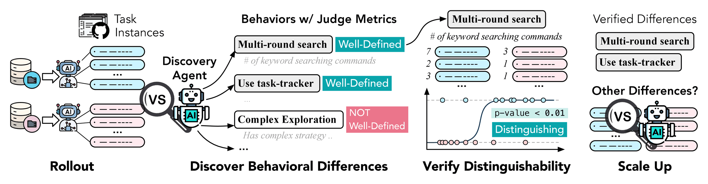
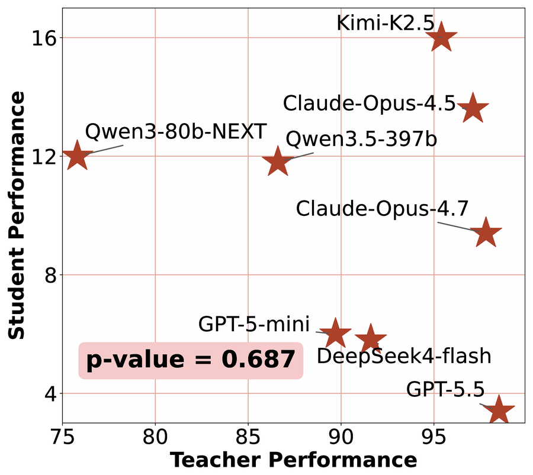
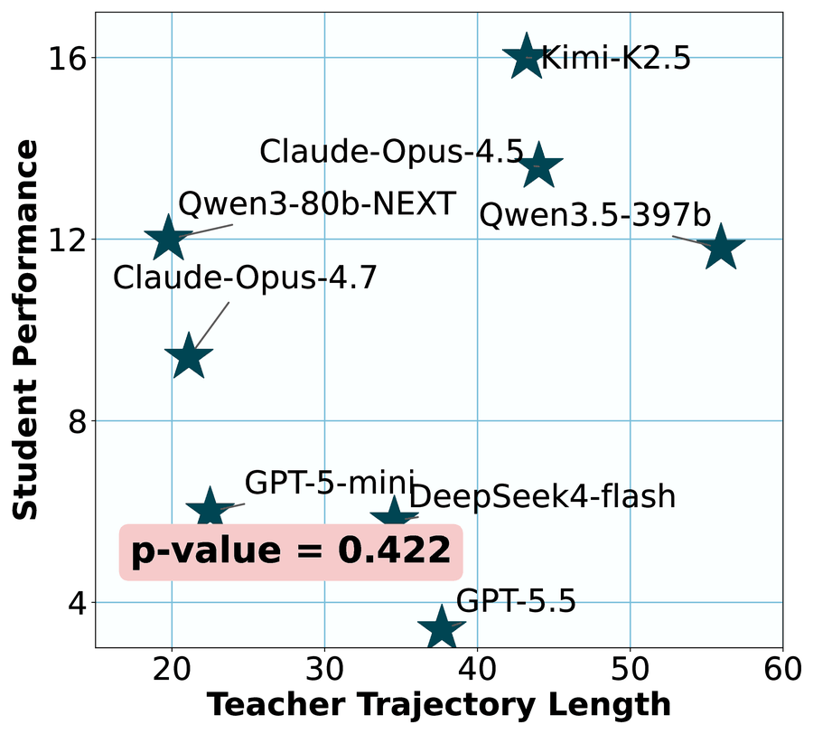
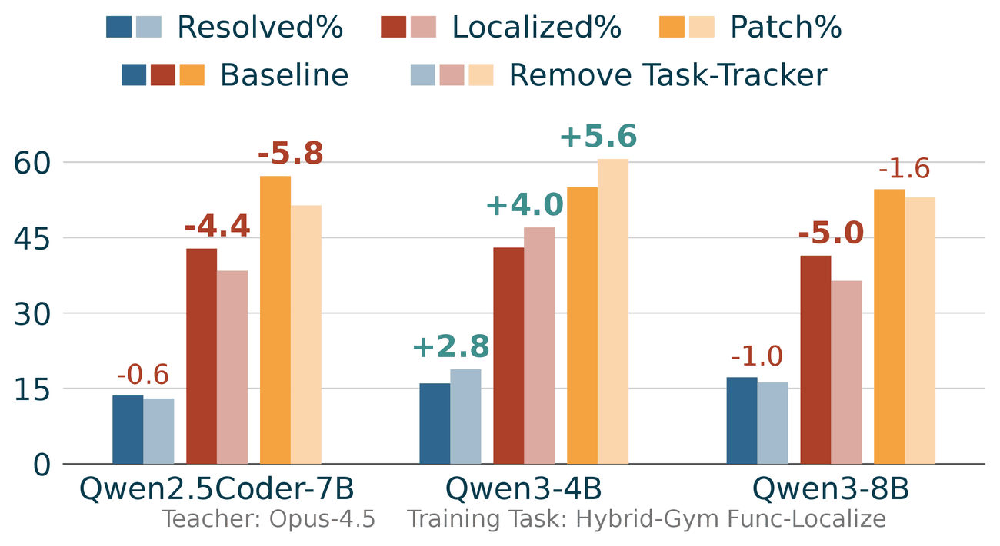
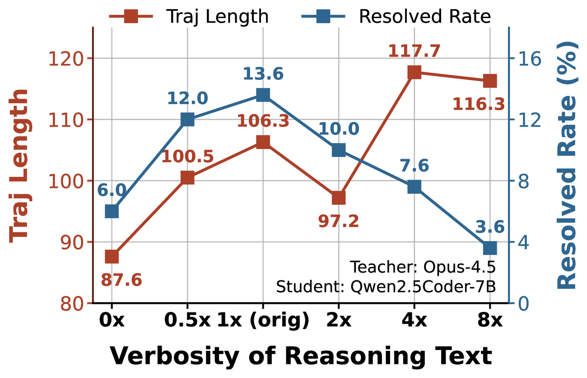

Successful Rollouts are Not Equal:
Discovering Influential Behaviors for Training Coding Agents
Overview

To find demonstration behaviors that affect the effectiveness of training, (left) prior works rely on human experts to manually make hypotheses, while (right) CATRadar narrows down the search space by automatically discovering candidate behaviors by extracting and comparing the behaviors of different trained agents.

Across different training sets, on the same sets of task instances, successful demonstrations generated by different teacher models lead to substantially different performance, and higher teacher performance does not necessarily transfer to better student performance.
Abstract
Most coding agent training methods judge the quality of demonstrations based on their final outcome, such as execution results or rubric scores. However, we observe that the effectiveness of training also substantially depends on how the demonstrations achieve the results. Previous work has manually made hypotheses about which demonstration behaviors influence the performance. To find such influential behaviors for Coding Agent Training more efficiently, we present CATRadar, an analysis method to automatically discover candidate behaviors by defining, extracting, and comparing the behaviors of different trained agents. CATRadar enables us to find behaviors that are influential to at least one model, including specific repo-exploration strategies, the planning and verification patterns, and the verbosity of the reasoning text. Our insights also translate to performance gains by various methods, including data selection, agent step synthesis, and behavior-conditioned rollout. Results show that our agent step synthesis method improves Qwen3-8B's resolved rate from 11.6% to 17.6% on SWE-Bench Verified.
Same training instances, same student, only successful demonstrations: different teachers still lead to substantially different students
CATRadar: Automatic Candidate Behavior Discovery

We run two trained coding agents on the same task instances, use a discovery agent to propose behavioral differences with a well-defined judge metric, and verify the distinguishability of each behavior by fitting a logistic regression.
Rollout and Discover
A discovery agent (e.g., Claude-Opus-4.7) compares the paired trajectories of two agents and proposes behavioral differences. Each behavior comes with a judge metric, computed by a script or an LLM judge; only well-defined metrics are kept.
Verify Distinguishability
We score each trajectory with the judge metric and fit a logistic regression that predicts which agent produced it. A behavior is distinguishing if the Wald test gives p < 0.01 (N = 50 trajectories per agent).
Scale Up
Verified behaviors join the candidate list, and the discovery agent is asked for further differences, for at most k = 5 iterations per task set and agent pair, across multiple training tasks and agent pairs.
We then test each candidate with controlled data interventions that change only the target behavior in the training demonstrations: trajectory post-editing adds, modifies, or removes steps while keeping every retained step supported by its preceding context, and behavior-conditioned generation prompts the teacher to exhibit the behavior on the same instances. A behavior is influential if its presence or absence leads to a substantial performance change.
Discovered Behaviors
We apply CATRadar to 8 teacher models and 3 student models (Qwen2.5Coder-7B, Qwen3-4B, Qwen3-8B), trained on R2E-Gym issue-solving and Hybrid-Gym function localization and evaluated on SWE-Bench Verified with the OpenHands agent harness. Compared with the behaviors manually hypothesized in prior work, CATRadar discovers a broader range of behaviors, spanning trajectory-level features, problem-solving strategies, and tool-use patterns.
| Behavior | Judge Metric | LEGO | Hybrid | Others | Ours |
|---|---|---|---|---|---|
| Multi-round search | Run keyword searching commands for ≥ 2 times | ✓ | |||
| Has fine-grained keywords | Search for fine-grained keywords (e.g., specific filenames) instead of only broad keywords (e.g., def or class) | ✓ | |||
| Limit target files before read | Limit the candidates to ≤ 30 files before reading any file | ✓ | |||
| Use task-tracker | Use the <function=task_tracker> tool for explicit reasoning | ✓ | |||
| Verify after edit | Has verification steps after the final file-editing action | ✓ | ✓ | ||
| Use think | Use the <function=think> tool for explicit reasoning | ✓ | |||
| Reasoning text verbosity | The length of the text part outside tool calls | ✓ | ✓ | ||
| Stuck in loop | Try different commands after failing for 3 times | U | U | ||
| Exploration length | The number of actions before the first file-editing action (≥ 16: high; 6–15: medium; ≤ 5: low) | U | |||
| Trajectory length | Has ≤ 7 agent actions: short; ≥ 8 agent actions: long | U | ✓ | ✓ | U |
Some of the behaviors discovered and examined by our framework. “✓”: the behavior is shown to be relevant to the final performance for some student models; “U”: the behavior is tested but not shown to be relevant. “LEGO” (Terminal-LEGO), “Hybrid” (Hybrid-Gym), and “Others” refer to existing works.
What Behaviors Affect Coding Agent Training?
Trajectory-level features are not good indicators
Longer trajectories and stronger teachers are commonly assumed to give better training data, but neither is significantly correlated with student performance.

(a) Teacher performance

(b) Trajectory length
Student performance (Qwen2.5Coder-7B) is not significantly correlated with trajectory-level features such as teacher success rate or trajectory length.
Effective repo-exploration strategies
Prior work checks whether a demonstration explores the repository sufficiently, but not how. CATRadar identifies two concrete strategies: Multi-Search, which searches for multiple keywords iteratively, and Target-Read, which only reads a file after narrowing down the target to a few files. Demonstrations with both strategies improve training (Method 1 and Method 3).
Planning steps have different effects on different models
We remove all task-tracker actions (a to-do-list tool in OpenHands) from Claude-Opus-4.5 demonstrations. Their presence improves Qwen2.5Coder-7B and Qwen3-8B, while degrading Qwen3-4B.

Planning steps in demonstrations have different effects on different models. Bold labels mark significant performance changes after removing all task-tracker actions from demonstrations (p-value < 0.05).
Verification transfers from simple to complex tasks
Remove Verify removes all steps after the last file-editing action; Add Verify, for demonstrations without any verification steps, copies the verification steps from another agent's demonstration of the same instance. Students trained on function-localization demonstrations with more verification steps also verify more on issue-solving. Verification improves the 7B and 8B models, but does not consistently improve Qwen3-4B.
| Teacher Model (Hybrid-Gym) | Teacher | Qwen2.5Coder-7B | Qwen3-4B | Qwen3-8B | |||||||||
|---|---|---|---|---|---|---|---|---|---|---|---|---|---|
| # Verify | # Verify | Res% | Loc% | Patch% | # Verify | Res% | Loc% | Patch% | # Verify | Res% | Loc% | Patch% | |
| Opus-4.5 | 4.4 | 13.3 | 13.6 | 42.8 | 57.2 | 11.6 | 16.0 | 43.0 | 55.0 | 14.4 | 17.2 | 41.4 | 54.6 |
| Remove Verify | 0.0 | 8.9 | 11.0 (-2.6) | 39.6 | 53.0 | 7.0 | 18.6 (+2.6) | 46.4 | 60.2 | 7.7 | 15.8 (-1.4) | 37.4 | 50.9 |
| Opus-4.7 | 1.1 | 4.3 | 9.4 | 32.8 | 47.8 | 4.7 | 12.2 | 33.4 | 46.8 | 9.3 | 11.6 | 30.2 | 45.4 |
| Add Verify | 4.2 | 11.2 | 10.8 (+1.4) | 34.0 | 54.2 | 9.9 | 13.4 (+1.2) | 38.4 | 50.8 | 15.2 | 15.0 (+3.4) | 36.2 | 50.8 |
Verification procedure in a simple training task (e.g., function localization) transfers to more complex tasks (e.g., issue-solving). However, the effect of verification steps depends on the student and teacher model. We highlight significant increases and decreases in resolved rates (p-value < 0.05).
Verbosity of reasoning text affects trajectory length
We prompt an LLM to rewrite the reasoning text (the non-tool-call text and the content of “think” actions) to be shorter or longer in proportion to its original length, without adding new information; “0x” removes all reasoning text.

When the verbosity of reasoning text increases (including non-tool-call text and content of the “think” actions), the trajectory length in general increases, and the performance first increases and then decreases.
Practical Utility of Our Discoveries
We apply the discoveries through three methods, ordered by increasing data-construction cost.
Method 1: Behavior-aware data selection
Under a fixed training-data budget, we keep demonstrations with both Multi-Search (at least three keyword searches) and Target-Read (narrow down to ≤ 50 candidate files before reading), and compare against equally sized subsets lacking either strategy.
| Teacher Model | Qwen2.5Coder-7B | Qwen3-4B | Qwen3-8B | ||||||
|---|---|---|---|---|---|---|---|---|---|
| Res% | Loc% | Patch% | Res% | Loc% | Patch% | Res% | Loc% | Patch% | |
| Training: R2E-Gym Issue-Solving | |||||||||
| GPT5-mini Subsets (250 examples) | |||||||||
| w/o Multi-Search | 9.0 | 34.4 | 52.4 | 10.0 | 43.8 | 62.2 | 10.2 | 43.8 | 60.4 |
| w/o Target-Read | 8.6 | 36.2 | 52.0 | 13.2 | 48.8 | 62.4 | 10.4 | 42.4 | 56.6 |
| Both Strategies (ours) | 11.4 (+2.8) | 49.4 | 63.6 | 14.2 (+4.2) | 58.4 | 75.4 | 13.8 (+3.6) | 48.2 | 63.2 |
| Training: Hybrid-Gym Func-Localize | |||||||||
| Claude-Opus-4.5 Subsets (250 examples) | |||||||||
| w/o Multi-Search | 2.8 | 13.6 | 31.6 | 11.8 | 38.0 | 51.4 | 4.8 | 15.2 | 29.2 |
| w/o Target-Read | 5.4 | 17.6 | 33.0 | 8.0 | 16.6 | 44.0 | 5.8 | 15.4 | 30.4 |
| Both Strategies (ours) | 7.2 (+4.4) | 21.2 | 39.0 | 13.2 (+5.2) | 35.4 | 50.8 | 11.6 (+6.8) | 28.4 | 41.8 |
| Claude-Opus-4.7 Subsets (350 examples) | |||||||||
| w/o Multi-Search | 2.8 | 15.8 | 42.8 | 7.2 | 27.5 | 40.0 | 8.6 | 26.8 | 40.2 |
| w/o Target-Read | 3.4 | 9.4 | 25.0 | 7.6 | 20.6 | 33.6 | 4.2 | 11.8 | 26.8 |
| Both Strategies (ours) | 6.0 (+3.2) | 27.2 | 61.4 | 9.6 (+2.4) | 25.8 | 36.8 | 10.2 (+6.0) | 27.2 | 39.4 |
Data selection results on SWE-Bench Verified. Parenthesized results are absolute gains compared to the lower resolved rate of the two ablations. We highlight gains for resolved rates that are significantly better than both ablations and one of the ablations (p-value < 0.05).
Method 2: Adding synthesized agent steps
We prompt an LLM to generate a task-tracker call for each function localization demonstration with a to-do list: identify the target file, locate the function, generate its docstring, and verify correctness. Subsequent task-tracker calls update the items at completion points, giving four synthesized task-tracker actions per demonstration. Although we train on function localization, the issue-solving resolved rate improves in all evaluated settings.
| Training Setting (Teacher → Student) | Res% | Loc% | Patch% |
|---|---|---|---|
| Training: Hybrid-Gym Func-Localize | |||
| GPT-5-mini → Qwen2.5Coder-7B | 6.0 | 44.6 | 66.2 |
| Add task-tracker | 9.6 (+3.6) | 33.2 | 48.4 |
| GPT-5-mini → Qwen3-8B | 10.8 | 56.6 | 71.6 |
| Add task-tracker | 13.0 (+2.2) | 49.2 | 61.6 |
| Opus-4.7 → Qwen2.5Coder-7B | 9.4 | 32.8 | 47.8 |
| Add task-tracker | 12.2 (+2.8) | 38.6 | 55.2 |
| Opus-4.7 → Qwen3-8B | 11.6 | 30.2 | 45.4 |
| Add task-tracker | 17.6 (+6.0) | 40.6 | 53.0 |
Adding synthetic task-planning steps to training trajectories improves performance on SWE-Bench Verified. We highlight significant improvements in resolved rates.
Method 3: Behavior-conditioned demonstration generation
We iteratively ask an agent to write a teacher prompt that elicits Multi-Search and Target-Read, generate a small set of demonstrations, and label them with an LLM judge, until the prompt significantly increases the share of demonstrations with these strategies (p < 0.05). Training on the new demonstrations improves Qwen2.5Coder-7B from 6.0% to 9.2%, while directly prompting the student to follow the strategies gives a smaller gain (7.2%).
| Teacher Model | Teacher (Hybrid-Gym Func-Loc) | Student (SWE-Bench Verified) | ||||||
|---|---|---|---|---|---|---|---|---|
| Multi-Search% | Target-Read% | Res% | Multi-Search% | Target-Read% | Res% | Loc% | Patch% | |
| GPT-5-mini | 58.8 | 1.5 | 89.7 | 74.9 | 53.2 | 6.0 | 44.6 | 66.2 |
| + prompt student | 58.8 | 1.5 | 89.7 | 75.6 | 57.6 | 7.2 (+1.2) | 48.2 | 67.0 |
| + prompt teacher | 72.5 | 10.4 | 85.9 | 78.2 | 64.3 | 9.2 (+3.2) | 43.4 | 55.6 |
Student performance (Qwen2.5Coder-7B) on SWE-Bench Verified under different teacher models and prompting strategies. We highlight significant changes in resolved rates.